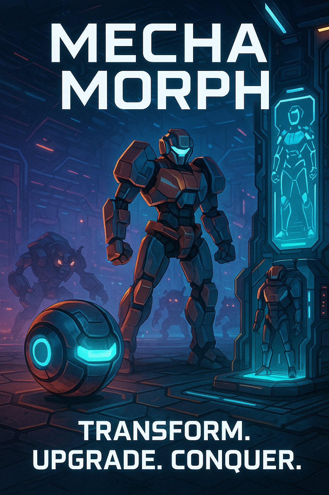
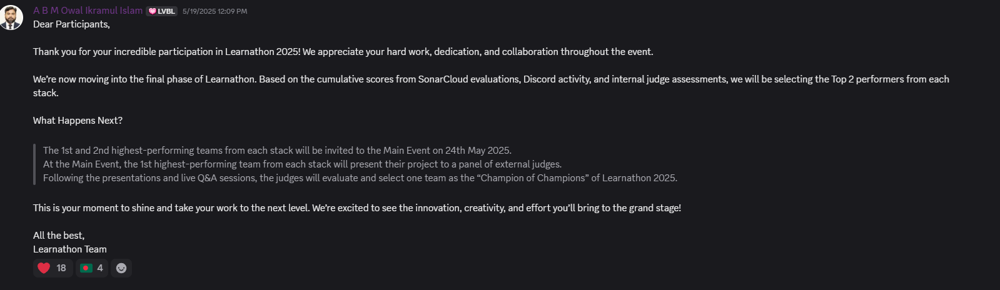
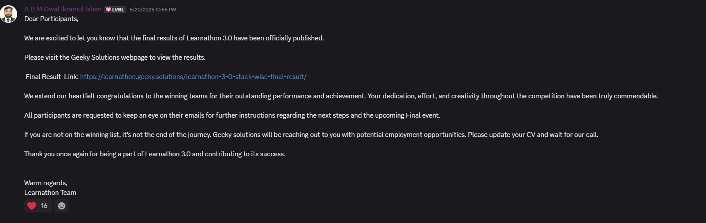

Learnathon 3.0 (A Journey I Will Remember)
The Start of the Journey
It all began with a message I found on Discord. Ever since I started my game development journey, I always wanted to be part of a community where I could learn and share my knowledge with others. That’s when I discovered a Discord community called “Game Developer Bangladesh Community.”
The message said: “There will be a training program for newcomer game developers. Grab your opportunity.”
Without wasting any time, I started exploring the program website,
Geeky Solutions.
After exploring the site, I learned the criteria and rules of the training program. One thing stood out clearly —
to join the training program, you must have a team. And that’s where the trouble began,
because I had no one around me who was interested in game development.
Finding Team Members
I remember how desperate I was to join that program and learn new things about game development. I asked many friends and juniors
to join me in the Unity stack, but no one was interested. Most people didn’t consider game development
as a career opportunity or even a hobby. I even told them, “Just put your name in the team, I will do the rest of the work,”
but still, I didn’t find anyone from my university or friend circle.
I searched for teammates on social media platforms like Facebook and Discord as well, but no luck.
It was November 21st, the last date of registration. When I almost gave up hope,
I suddenly saw a message in a Discord channel:
“Looking for team members for Learnathon 3.0 Unity Stack.”
I immediately messaged the person. After a while, I received a reply:
“Yes, we need a member too. We are two in number.”
And this is how my journey truly began.

The Selection Round
After registration, we had to go through a selection round.
The organizers set up an online MCQ-based exam with various programming questions that we had to answer within a limited time.
During the exam, we had to keep our cameras on to avoid malpractice.
It was a wonderful experience. I was able to answer all the questions. A few days later, they published the results.
Alhamdulillah, we got selected for the training program.
The Program
After the selection round, the organizers arranged a virtual orientation session through Microsoft Teams.
Then we were invited to the dedicated Discord channel for the program and added to the GitHub repository.
A mentor from Brain Station 23 named “Faisal” was assigned to our team. We chose our team name as
“Tripple-S Trinity”, based on our initials - Sakur, Sultana, and Sufian.
It felt like a dream I had been chasing for months was finally coming true. But the real marathon was about to begin.
Making MechaMorph: Battle Sphere

Before starting development, our mentor asked us to propose at least three project ideas suitable for beginners.
We all submitted our ideas, and the mentor selected the MechaMorph project.
Our next task was to prepare the GDD, which would act as the core document for the project. We worked hard to make it as perfect as possible.
Our game was about:
“MechaMorph is a single-player game where players control a character that can transform between two forms: a ball and a robot.
Each form offers unique advantages and disadvantages. The objective is to earn the highest points before the timer runs out.”


Some examples of our GDD proposal pages.
After finalizing the GDD, we sent it to our mentor for review. He suggested a few improvements, which we implemented. Once the GDD was approved, development began.
Dividing Team Work
We divided the tasks based on our strengths. My teammates worked on the player controller and UI/UX, while I took full responsibility for the enemy system.
I started working on the enemy system, enemy AI mechanics, particle effects, and the main boss enemy.
It was challenging because we had multiple enemy types including melee, ranged, drone enemies, and the boss — each with unique abilities.
AI development was tough but enjoyable. The melee enemies had suicide bomb attacks, while ranged enemies shot projectiles from a distance.
Thankfully, OOP saved a lot of time.
Challenges During Development
1. While working on the drone enemy, I encountered a frustrating bug. My mentor later taught me something completely new — the importance of setting the correct
base height for the NavMesh Agent. Once I adjusted it, the drone worked perfectly. I had spent two weeks debugging it, thinking the issue was with my code or the editor. A great lesson learned.
2. Another major challenge was mismatched schedules. As students, my teammates had exams and other academic commitments. I also had my thesis work.
When I was free, they were busy, and vice versa. Without the player system, I couldn't test enemies, and without my part, they couldn’t complete theirs.
We also faced repeated Git conflicts because we weren’t coordinating our commits properly.
Solving the Problems
Our mentor advised us to work more closely and maintain continuous communication.
We started staying active on our personal Discord server. Before pushing code, we warned each other:
“I am going to push my code now, please don’t push anything for the next 10 minutes.”
This helped reduce conflicts, but then Ramadan began, and our schedules changed again.
Working During Ramadan
During Ramadan, we mainly got free time in the early morning. At night, we were occupied with prayer, meals, and rest.
My teammates had university during the day, and our mentor was also busy.
So, I decided to continue working on the enemy system alone so I could help the others later.
At the same time, my thesis defense date was announced, so I had to prepare for that as well.
I took a 5-day break to prepare. Alhamdulillah, I passed the defense successfully, and after Ramadan ended, I could fully focus on the project again.
Final Stress
As the submission date approached, the pressure increased. Our mentor was also busy, so we had to handle most things on our own,
although he guided us through messages whenever possible.
In April, we became serious again. We completed everything planned in the GDD, and starting from April 15th,
we began polishing and bug-fixing the game.
Our last commit on GitHub was on April 28, 2025.
Making the Game Trailer, Pitch & More
Once the project was finished, our final task was to make a trailer, pitch video, and other required documents.
I took responsibility for creating the trailer and pitch video, while my team members handled the forms and documentation.
Watch MechaMorph Battle Sphere Trailer
Final Submission and Reflection
Finally, on April 30, 2025, we submitted our project. The judges asked everyone to be patient while they evaluated each submission.
Later, they extended the submission timeline to May 5, 2025.

It was a moment of relief and accomplishment.
On May 20, 2025, I received a notification from the official Learnathon 3.0 Discord server. The final results were published.
I was nervous but excited. When I opened the results:

My team became the Second Runner-Up in the competition. Originally, only the first and second teams were supposed to be invited to the final event, but later they invited the second runner-up team as well.
The Final Event
Since I live in a different city, I had to travel to Dhaka alone for the final event. I did so on May 24, 2025.
It was an amazing experience meeting other game developers and organizers in person and also meeting my teammates for the first time.
 The final event was full of fun. Tech experts and CEOs of well-known tech companies were present. They were judging the finalists to select the Champion of Champions.
The final event was full of fun. Tech experts and CEOs of well-known tech companies were present. They were judging the finalists to select the Champion of Champions.
I tried to network with participants from other stacks as well. We also received free snacks, coffee, and dinner at the event.
After the event, Unity stack expert “Tanimul Haque” asked us about our future plans in game development.
We discussed and decided to continue our journey with the Unity stack.
Later, one member from the champion team expressed interest in joining us. So our team grew from three to four members.

Learnathon helped me grow in game development, and it is an experience I will always remember.
Looking back, this journey was filled with challenges, learning experiences, and growth. I am grateful for the opportunity to be part of Learnathon 3.0 and for the support of my teammates and mentor. This experience strengthened my passion for game development and motivated me to keep chasing my dream.
"I am not sure where I will end up in game development, but one thing is certain, I will keep learning and growing as a game developer"← Back to Blog